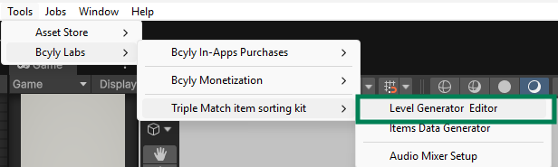
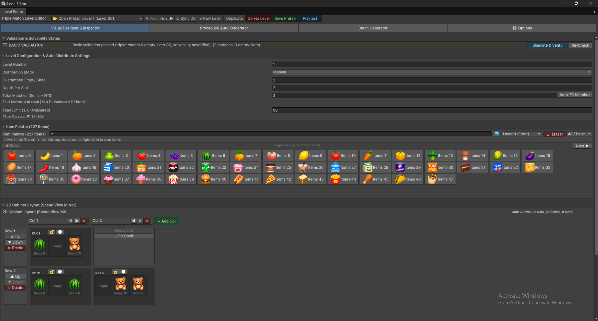
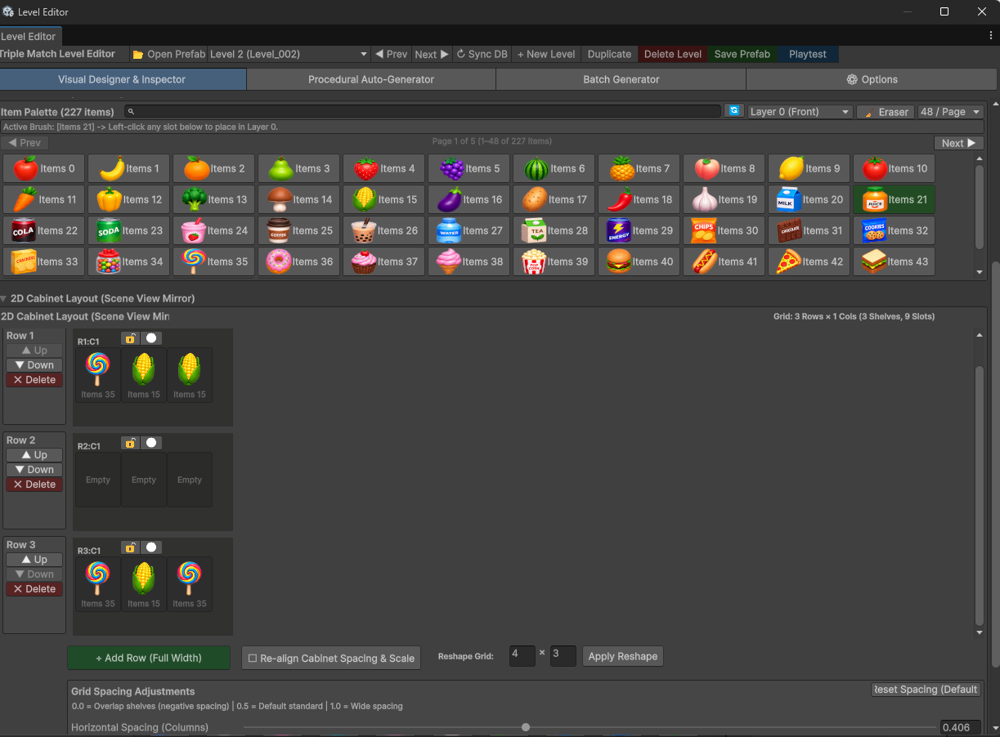
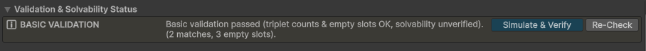

5. Understand the Level Editor
Master the 4 Level Editor tabs, toolbar actions, level configurations, 2D/3D cabinet layouts, and solvability validation.
Open Tools > Bcyly Labs > Triple Match item sorting kit > Level Generator & Editor.

5.1 The four tabs

| Tab | Use it for |
|---|---|
| Visual Designer & Inspector | Build or edit one level by working with shelves and items. |
| Procedural Auto-Generator | Generate one level from settings such as size, shape, and item count. |
| Batch Generator | Generate many levels with a difficulty progression. |
| Options | Generate alphabet/number layouts and run project-wide level maintenance tools. |
These tabs are different from Distribution Mode, which decides how a level receives its items.
5.2 Top toolbar

| Control | What it does |
|---|---|
| Open Prefab | Opens the selected level's saved prefab in Prefab Mode. |
| Level dropdown | Selects a level to edit. |
| Prev / Next | Loads the previous or next level. |
| Sync DB | Rebuilds the level database from numbered level prefabs on disk. |
| + New Level | Creates the next level with a starting layout. You can then change it. |
| Duplicate | Saves the current level, then creates a copy with the next level number. |
| Delete Level | Deletes the selected level and renumbers the later levels. Read the confirmation before continuing. |
| Save Prefab | Saves your working level and updates its database entry. |
| Playtest | Starts a test of the selected level in Play Mode. |
5.3 Level configuration

| Option | What it means |
|---|---|
| Level Number | The level's number. Saving uses a name such as Level_001.prefab. Keep it consistent with the level you intend to edit. |
| Distribution Mode: Manual | Uses the item layout you place in the editor. |
| Distribution Mode: Auto Distribute | Creates items from the level settings when the level starts. |
| Use Random Items | Enables random item selection for auto distribution. |
| Guaranteed Empty Slots | Reserves room for moving items during distribution. |
| Depth Per Slot | Maximum number of item layers in a slot for distribution. A value of 2 allows a front layer and a layer behind it. |
| Total Matches | Requested groups of three for generated content. For example, 8 matches means 24 items. |
| Auto-Fit Matches | Sets the match count to fit the calculated capacity. |
| Capacity information | Shows shelves, slots, and the estimated maximum item capacity. |
| Item Pool Mode: All Items | Uses all items available to the tool. |
| Item Pool Mode: Range | Uses only the selected item index range. |
| Start / End Item Index | The first and last item indexes in that range. Check the displayed item names. |
| Time Limit | Seconds available to finish. 90 means 1 minute 30 seconds. 0 means unlimited time. |
In Manual mode, your painted items define the layout. Editing Total Matches alone does not paint more items. Use the balance matrix to check the actual placed items.
5.4 Item Palette and painting

| Control | How to use it |
|---|---|
| Search | Find an item by its name. |
| Refresh icon | Reload Item Data from disk. Use it after creating items. |
| Item thumbnail | Select the item as your active brush. |
| Layer dropdown | Choose Layer 0 (Front), Layer 1 (Back), or Layer 2 (Deep Back). |
| Eraser | Clears items from clicked slots. Right-click is also a clear action. |
| Items per page | Changes how many thumbnails appear on one page. |
| Prev / Next below the palette | Moves between item pages. |
| Active Brush message | Shows which item and layer you are editing. |
Select an item, select the layer, then left-click a slot. Check the front and deeper layers when you edit an existing level.
5.5 Cabinet layout controls
Use the cabinet area below the palette in the same screenshot.
| Control | What it does |
|---|---|
| Add First Row | Starts the layout when no shelves are present. |
| + Add Col | Adds another column. |
| Column arrows | Move a column left or right. |
| X beside a column | Removes that column. |
| Row Up / Down | Changes the row order. |
| Row Delete | Removes the row and its shelves. |
| + Fill Shelf | Adds a shelf in an empty grid cell. |
| + Add Row (Full Width) | Adds a row across the current width. |
| Re-align Cabinet Spacing & Scale | Repositions the shelves using the layout settings. |
| Reshape rows / columns and Apply Reshape | Changes the cabinet arrangement. Check the whole layout afterward. |
| Horizontal Spacing | Changes the space between columns. |
| Vertical Spacing | Changes the space between rows. |
| Reset Spacing (Default) | Restores the tool's spacing values. |
| Lock icon on a shelf | Adds or removes the shelf lock. |
| Required match count near a lock | Sets how many matches are needed to unlock it. |
| Restricted icon on a shelf | Adds or removes the shelf restriction. |
| Hold Items | Lets a restricted shelf contain items when enabled. |
Small spacing values can make shelves overlap. Use Reset Spacing if you need a clean starting point. The current reset values are about 0.406 horizontally and 0.333 vertically; the middle of the slider is not the exact reset value.
5.6 Check the level

- Re-Check: Updates the validation result.
- Simulate & Verify: Runs the level solver check.
- Item Triplet Balance Matrix: Shows counts for each item type in a manual layout. Counts should form complete
groups of three.
For example, 3 apples and 3 bananas form two complete matches. Four apples leave an extra apple.
A validation result is useful, but always play the level too. Check the timer, readability, difficulty, and whether the moves feel clear.